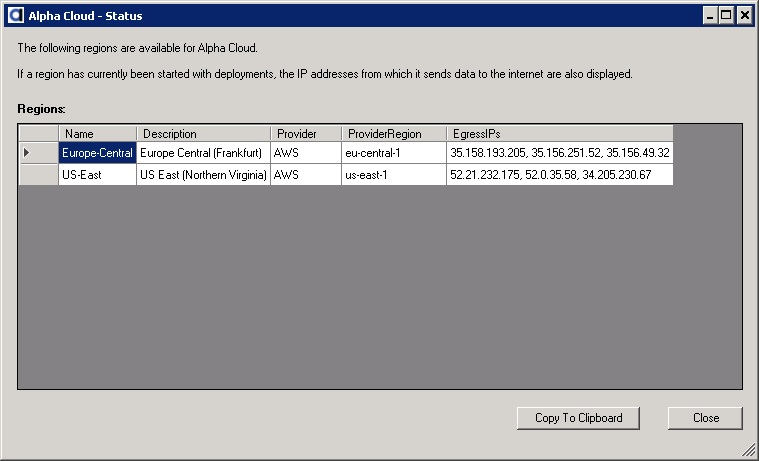
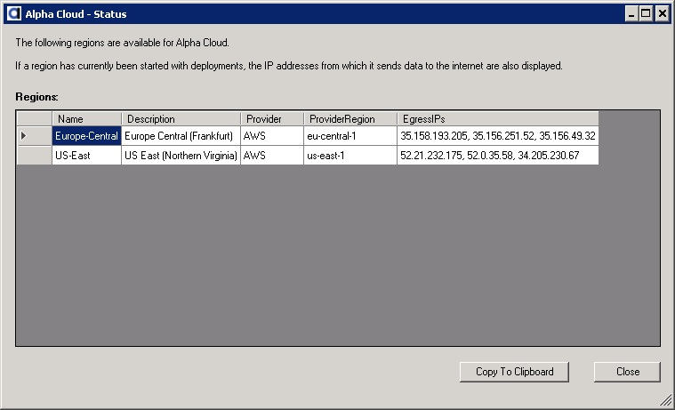

The Manage Web Sites Dialog shows the egress IPs for the region a web site is assigned to.

{kind=link}
The Alpha Cloud Status Dialog shows the egress IPs for each region running on Alpha Cloud.

Overview
Egress IPs
Which IP Addresses Will Your Web Site Connect to the Internet From?
Alpha Cloud web application servers run on private subnets with limited access from the internet. Only the assigned load balancer and the Alpha Cloud administrative subnet can acccess a running server directly.
Application servers do not have an "internet-facing" or public IP address. When an application needs to connect to the internet for any reason, it makes use of what is called a NAT gateway. On Amazon, this is a service that routes calls out to the internet on behalf of a server and translates the address to a public address.
Database servers and web services often restrict access by internet address using a firewall. Because Alpha Cloud does not host databases, you will need to deploy your database either behind your own firewall or on a public cloud provider, such as Amazon RDS (Relational Database Services).
Wherever you choose to host your database, we strongly recommend that your database limit access to IP addresses that you authorize. Your application running on Alpha Cloud will, of course need to be granted permission to access your database.
For a database or private web service behind your own firewall, you will need to make an exception for the IP addresses from which your application may access them from within Alpha Cloud.
For a database that is hosted, the process will vary. Amazon RDS databases use security groups with rules to limit access by IP address.
For instructions on how to set up an Amazon RDS databases see Creating An Amazon RDS MariaDB Instance
The IP addresses from which an Alpha Cloud server access the internet is referred to as an "egress" IP address. This is the address that the target of a request sees as the source.
Each availability zone (a data center) within a region that Alpha Cloud is running on is assigned a unique public IP address for Alpha Cloud. Server groups distribute running servers across up to three availability zones within a region (some regions only have two availability zones). As a result, a request from one of your web applications may come from any of the IP addresses assigned to the region the web site is deployed in.
The IP addresses assigned to availability zones in Alpha Cloud are maintained across restarts so they rarely change, if ever. When you deploy a web site into a region, you can determine the IP addresses from which your web site may access the internet in one of two ways.
The Manage Web Sites Dialog shows the egress IPs for the region a web site is assigned to.
The Alpha Cloud Status Dialog shows the egress IPs for each region running on Alpha Cloud.
